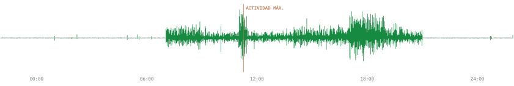

Portada
Brincadiano analiza en Julia la señal RAW de acelerometría ActiGraph de niños registrados durante varios días, para estudiar actividad física, sueño, ritmos circadianos y exposición a la luz. Su primer objetivo es el timing circadiano de la actividad vigorosa: no solo cuánto se mueve un niño, sino cuándo lo hace respecto a su propio ritmo. Este libro es una adaptación del informe del proyecto, pensada para estudiarlo y debatirlo desde la clínica y desde la ingeniería. Se va incorporando capítulo a capítulo.

Derechos de autor © 2026 Rafael Castro Triguero, María Mercedes Gil Campos y José Manuel Jurado Castro. Todos los derechos reservados. Documento de trabajo de investigación; no destinado a distribución pública. Grupo GC23 «Metabolismo infantil» · Instituto Maimónides de Investigación Biomédica de Córdoba (IMIBIC) · Hospital Universitario Reina Sofía · Universidad de Córdoba. Los datos del proyecto son datos de salud de menores, pseudonimizados; este libro no contiene ningún dato individual.
Índice
El informe original tiene una introducción, 17 capítulos y tres anexos. El libro los incorpora en el mismo orden, de uno en uno; los que aún no están se citan en el texto como «cap. N del informe».
report/chapters/00_objetivos.tex).
| Título | Ruta | En el libro | |
|---|---|---|---|
| 1 | Metabolismo infantil para ingenieros | fundamentos | Incorporado |
| 2 | Grupo GC23 Metabolismo infantil | núcleo | Incorporado |
| 3 | Estado del arte, hipótesis y objetivos | núcleo | Incorporado |
| 4 | Fundamentos de acelerometría | fundamentos | Incorporado |
| 5 | Diseño del estudio y adquisición | núcleo | Por incorporar |
| 6 | Formato GT3X, lector nativo y herramientas | referencia | Por incorporar |
| 7 | Ritmos circadianos y estadística circular | fundamentos | Por incorporar |
| 8 | Control de calidad por registro | referencia | Por incorporar |
| 9 | Métricas de aceleración y epochs | referencia | Por incorporar |
| 10 | Detección de episodios de actividad vigorosa | núcleo | Por incorporar |
| 11 | Sueño y periodo de reposo | referencia | Por incorporar |
| 12 | Ritmo de reposo-actividad | núcleo | Por incorporar |
| 13 | Timing circadiano de la actividad vigorosa | núcleo | Por incorporar |
| 14 | Exposición a la luz | núcleo | Por incorporar |
| 15 | Validación y benchmark externo | referencia | Por incorporar |
| 16 | Relación con la salud metabólica | núcleo | Por incorporar |
| 17 | Conclusiones | núcleo | Por incorporar |
| Introducción, resumen ejecutivo y referencia rápida | Por incorporar | ||
| Anexos (tablas del dataset, flujo de ejecución, procedencia de las figuras) | Por incorporar | ||
| Referencias | Las de los capítulos incorporados |
De momento esta edición web publica solo la portada y el capítulo 1. Los demás capítulos incorporados al libro irán apareciendo aquí; mientras tanto, las remisiones a ellos se leen como texto, sin enlace.
Qué es este libro y qué no es
- Fuente científica. El informe LaTeX de
report/es el original. Aquí se reescribe cada capítulo sin perder explicaciones, hipótesis ni limitaciones. Cada cambio editorial se documenta enquarto/docs/auditoria.md. - Lo que añade el libro. Objetivos de aprendizaje y otros bloques docentes están integrados en el texto, sin recuadro; qué bloques son añadidos se registra en
quarto/docs/auditoria.md. Todo lo demás procede del informe. - Datos. Ninguna página contiene datos individuales. Las ilustraciones son conceptuales y las simulaciones, sintéticas y rotuladas como tales. Las figuras con datos reales del informe solo se incorporarán con su procedencia trazada y sin identificar a ningún participante.
- Sin conexión. Todo lo necesario para leer el libro está dentro de la carpeta: ecuaciones, estilos y figuras. Solo los enlaces a las referencias (DOI) requieren Internet al abrirlos.
Cómo leerlo
Cada afirmación sobre los datos lleva su estado: confirmado, provisional, pendiente o no válido. Cada capítulo abre con sus objetivos, sus lecturas esenciales y una tabla con sus secciones y el tiempo de lectura y de estudio de cada una. Las dudas del proyecto (las fichas del cuaderno de dudas con el grupo clínico) aparecen al final de cada capítulo con su identificador, su prioridad y su estado.
Uso de herramientas de inteligencia artificial
Según el informe (cap. 6, «Uso de herramientas de IA»), el código del pipeline, los tests y buena parte de la redacción se han desarrollado con un asistente de programación basado en IA (Claude Code, de Anthropic), bajo la dirección y la revisión del investigador, que fija los hitos y aprueba cada uno. Las ilustraciones conceptuales marcadas como tales se han generado con FigureLabs a partir de descripciones sin datos del estudio, se han revisado a mano y llevan su archivo de procedencia. La adaptación de este libro a Quarto también se ha hecho con Claude Code.
Cómo se controla, según el informe
- Verificación. Cada función tiene tests de solución conocida; el lector se valida muestra a muestra frente a ActiLife, y las métricas frente a herramientas de referencia (cap. 15 del informe). Cada cifra sale de un script y lleva su estado.
- Ilustraciones. Cada imagen de FigureLabs se revisa a mano (las primeras versiones han traído erratas y errores conceptuales que se han corregido) y lleva un archivo de procedencia con el prompt.
- Datos. El asistente ejecuta el código en el equipo local, pero el modelo que lo guía es un servicio remoto que recibe el código, los textos y las salidas que lee: resúmenes, tablas por ID pseudonimizado y figuras derivadas. Nunca ha leído campos identificativos. A FigureLabs no se envía ningún dato ni derivado. Que este uso sea compatible con el consentimiento y el dictamen ético es la ficha DAT-04 pendiente.
Cómo abrirlo
Esta es la edición web del libro, publicada desde el repositorio de Brincadiano. No requiere instalar nada: la barra de capítulos, el índice de cada página, el buscador y las ventanas emergentes de las citas funcionan en el navegador, y las simulaciones se ejecutan en local, sin enviar datos a ningún servidor.